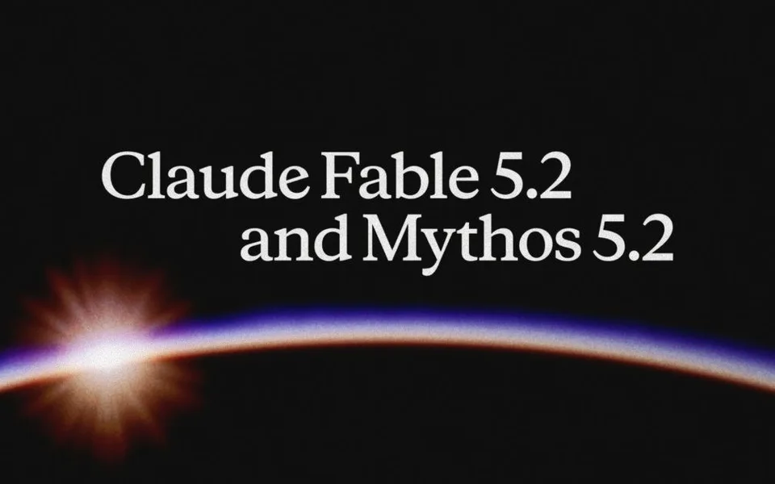

ARTICLE 01
Claude Fable 5.2와 Claude Mythos 5.2 출시
Fable·Mythos 5.2 출시, 더 빠르고 저렴해졌어요.

SUMMARY
- Anthropic이 Claude Fable 5.2와 Mythos 5.2를 공개했어요. 코딩·추론·비전이 좋아졌고, 불가능에 가까웠던 소프트웨어 마이그레이션과 페르마의 마지막 정리 형식화를 30시간 만에 해냈어요.
- 두 모델은 같은 기반 모델이에요. Fable은 사이버·생물 안전장치로 모든 사용자에게 열려 있고, Mythos는 인증 프로그램을 통과한 보안·바이오 연구 조직에 제공돼요. 5.1보다 출력은 최대 30% 빨라졌어요.
- 가격은 입력 100만 토큰당 8달러, 출력 40달러로 내려갔고, 최대 2.5배 빠른 패스트 모드는 16달러와 80달러예요. 일반 작업은 Opus 5.5로 시작하고, 어려운 과제에 Fable이나 Mythos를 쓰길 권해요.
LINK